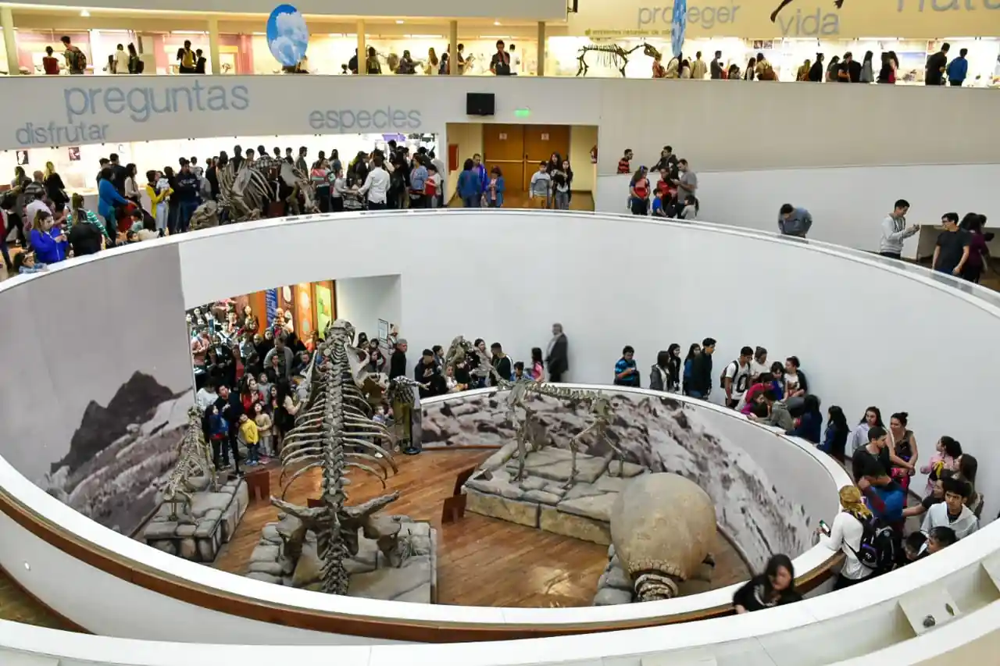
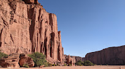

Jurisdicción
Argentina se compone de 24 jurisdicciones: 23 provincias y un distrito federal.
Buenos Aires

Mar del Plata
La Plata

Bahia Blanca

San Clemente del Tuyú
Ciudad de Buenos Aires

Flor generica - Ciudad de Buenos Aires
El Obelisco - Ciudad de Buenos Aires
Casa Rosada - Ciudad de Buenos Aires
El cabildo - Ciudad de Buenos Aires
Catamarca
Catedral de la virgen del valle en San Fernando del Valle de Catamarca

Casa Natal De Fray Mamerto Esquiú
Termas de Fiambala
Gruta de la Virgen del Valle
Chaco
Campo del Cielo
Isla del Cerrito
Campo del Parque Nacional El Impenetrable
Campo del Parque de la Democracia y de la Juventud
Chubut

Parque Nacional Los Alerces
Parque Nacional Lago Puelo

Museo Paleontológico Egidio Feruglio
Punta Tombo
Córdoba
Villa General Belgrano

Villa Carlos Paz
Catedral de Córdoba Nuestra Señora de la Asunción

Museo Provincial de Ciencias Naturales Arturo Illia
Corrientes

Esteros del Iberá

Catedral Basílica 'Nuestra Señora del Rosario'
Basílica Nuestra Señora de Itatí
Teatro Oficial Juan de Vera
Entre Ríos

Gualeguaychú

Paraná

Castillo San Carlos

BordeRío Bodega & Vinedos
Formosa
Puente Internacional San Ignacio de Loyola

Museo Histórico Regional 'Juan Pablo Duffard'

Catedral 'Nuestra Señora del Carmen'
Reserva Natural Formosa
Jujuy
Mirador del cerro El Porito

Monumento a los Héroes de la Independencia
Quebrada de Humahuaca
Garganta del Diablo
La Pampa

Teatro Español

Parque Nacional Lihué Calel
Museo Provincial de Artes
Laguna La Arocena
La Rioja

Parque Nacional Talampaya

Parque provincial El Chiflón

Sitio Arqueológico De Hualco
Termas de Santa Teresita
Mendoza

Las Leñas
Parque Provincial Aconcagua

Portones del Parque General San Martín
San Rafael
Misiones

Las Cataratas del Iguazú
La Aripuca

Ruinas de San Ignacio Miní
Güirá Oga
Neuquén

Cascada Chachin - Hua Hum
Volcán Lanín

Volcán Batea Mahuida
Observatorio Astronómico de Neuquén
Río Negro
Cerro Tronador
Sendero de los Arrayanes
Parque Nahuelito

Centro Cívico Bariloche
Salta
Parque Nacional los Cardones

Catedral Basílica de Salta
Museo de Arqueología de Alta Montaña
Viaducto la Polvorilla
San Juan
Museo y Biblioteca Casa Natal de Sarmiento
Parque Provincial Ischigualasto
Parque Nacional El Leoncito
Museo de la Historia Urbana
San Luis
Parque Nacional Sierra de las Quijadas.
Iglesia Catedral de San Luis

Casa del Poeta Antonio Esteban Agüero
Lago Potrero De Los Funes
Santa Cruz
Parque Nacional Los Glaciares
El Chalten
El Calafate

Glaciarium Museo del Hielo Patagónico
Santa Fe

Monumento Histórico Nacional a la Bandera
Basílica Nuestra Señora de Guadalupe

Centro Cultural Parque de España
Puente Colgante Ing. Marcial Candioti
Santiago del Estero
Centro Cultural del Bicentenario

Plaza Libertad Santiago del Estero
Casa de Gobierno
Museo de Arte Sacro San Francisco Solano
Tierra del Fuego

Parque Nacional Tierra del Fuego
Ushuaia
Canal Beagle
Isla Martillo
Tucumán